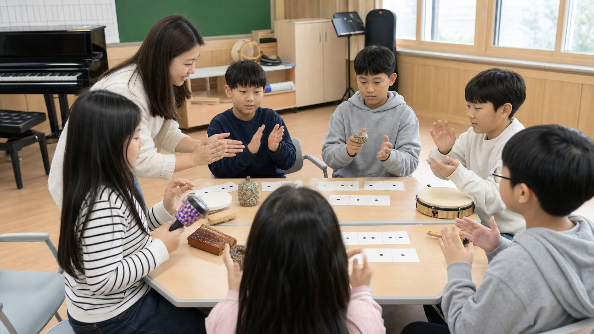
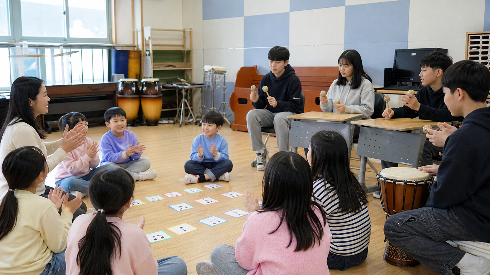

0-5분
도입
도입
음악으로 문 열기
잔잔하고 밝은 음악을 틀어두고 학생을 맞이합니다. 자리에 앉으면 손뼉 4박으로 집중 신호를 연습합니다.
- 진행자: 손뼉 네 번으로 리듬 제시
- 학생: 같은 리듬 따라 하기
- 수업 약속 세 가지 공유: 듣기, 선택하기, 놀리지 않기
 상담 신청
상담 신청
토닥토닥 마음놀이터 1회차
처음 만나는 학생들이 노래와 리듬을 통해 긴장을 낮추고, 서로의 이름과 목소리를 안전하게 나누는 40분 도입 수업입니다.
낯선 수업 환경에서 느끼는 긴장감을 낮추고, 음악 활동을 안전한 놀이로 경험한다.
친구의 이름과 목소리를 존중하며 듣고, 짧은 리듬으로 자신을 소개한다.
박, 리듬, 반복 응답을 몸과 소리로 체험하고 간단한 이름 리듬을 만든다.
잘하는 것보다 참여하는 것, 크게 하는 것보다 서로 들리는 것, 정답을 맞히는 것보다 내 방식으로 표현하는 것을 중요하게 안내합니다.

잔잔하고 밝은 음악을 틀어두고 학생을 맞이합니다. 자리에 앉으면 손뼉 4박으로 집중 신호를 연습합니다.
짧은 콜 앤 리스폰스 방식의 인사노래를 익힙니다. 처음에는 허밍, 다음에는 가사, 마지막에는 이름을 넣어 부릅니다.
자기 이름을 4박 안에 넣어 말하고, 손뼉 또는 악기로 표현합니다. 학생은 말하기, 치기, 고개 끄덕이기 중 하나를 선택할 수 있습니다.
학생들이 만든 이름 리듬 중 3-4개를 골라 이어 붙입니다. 리듬악기, 손뼉, 책상 두드리기, 발 구르기를 조합합니다.
오늘 수업을 마친 느낌을 한 단어 또는 한 리듬으로 나눕니다. 발표가 부담스러운 학생은 카드에 표시만 해도 됩니다.
“오늘은 노래를 잘 부르는 시간이 아니라, 음악이랑 조금 친해져 보는 시간이에요. 크게 말하지 않아도 괜찮고, 악기를 꼭 잡지 않아도 괜찮아요. 대신 서로의 소리를 놀리지 않고 들어주는 약속은 꼭 지켜봅시다.”
“처음에는 가사를 몰라도 됩니다. 입을 다물고 마음속으로 따라와도 되고, 음만 흥얼거려도 좋아요. 두 번째부터는 선생님이 부르면 여러분이 대답하는 방식으로 해볼게요.”
“이름은 나를 알려주는 가장 짧은 음악이 될 수 있어요. 내 이름을 네 박자 안에 넣어보고, 마지막 한 박자는 손뼉이나 악기로 채워봅시다.”
“오늘 만든 리듬은 완성품이라기보다 우리 반이 서로를 알아가기 시작했다는 표시예요. 다음 시간에는 내 마음에 어울리는 소리를 찾아보겠습니다.”

내 이름을 네 박자로 나누어 적어봅니다.
오늘 내 마음과 가까운 단어를 고르거나 직접 적어봅니다.
기대 어색함 궁금함 편안함 긴장 즐거움
그 마음을 소리로 표현하면?
첫 회차는 음악 실력 평가처럼 느껴지지 않게 하는 것이 가장 중요합니다. 음정, 박자 정확도보다 “내가 참여 방식을 선택할 수 있다”는 경험을 우선으로 둡니다.